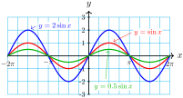

Example 7.1.
Compare the graphs of \(f(x)=2\sin (x)\) and \(g(x)=0.5\sin (x)\) with the graph of \(y=\sin (x)\text{.}\)
Solution.
Use technology to graph the three functions for \(-2\pi \le x \le 2\pi\text{.}\) The graphs are shown below.

All three graphs have the same period (\(2\pi\)) and midline (\(y=0\)), but the graph of \(f\) has amplitude 2, and the graph of \(g\) has amplitude 0.5.